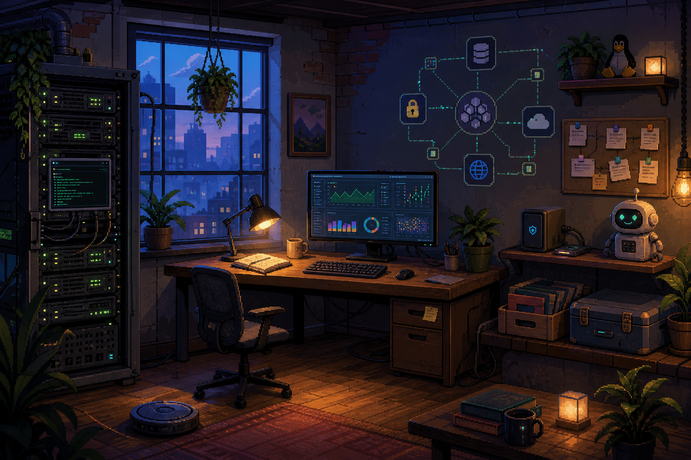

Linux, Docker, cloud
Safer foundations, hardening, deployment and troubleshooting with reversible changes.

I help small teams stabilize infrastructure, verify backups and connect APIs without turning the first step into a giant project. Pick an object in the room, then use this readable path if you prefer the conventional route.
Safer foundations, hardening, deployment and troubleshooting with reversible changes.
Metrics, logs, alerts, disk health and backup freshness that support a decision.
n8n, webhooks, OAuth, retries, idempotency and human review around sensitive actions.
Catalog, orders, stock and payment-service readiness for small online stores.
One server, one flow or one operational problem.
Backups first, secrets protected and clear boundaries.
Health checks, logs, tests and honest unknowns.
Documentation and a runbook that survives handoff.